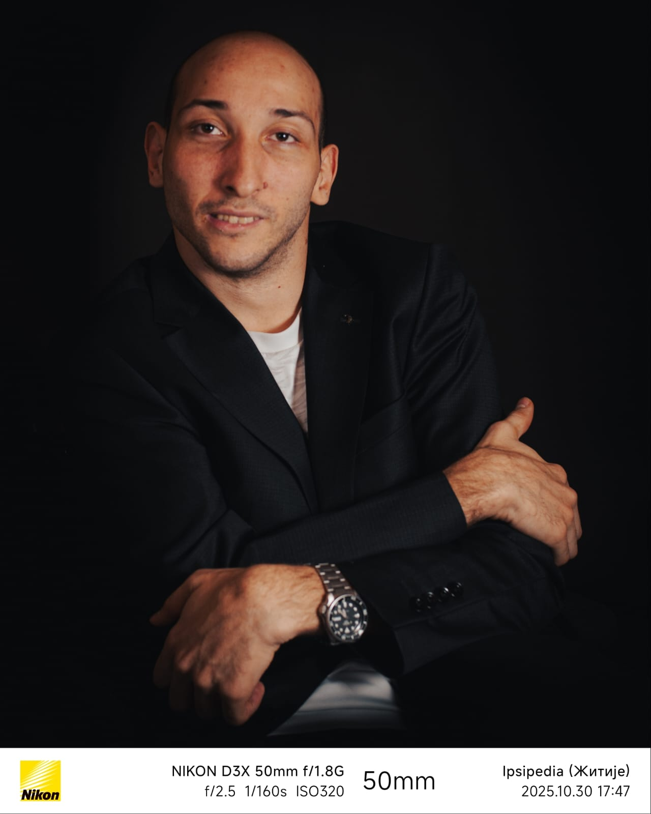

"Passionate developer focused on the intersection of high-level architecture and low-level optimization."
A lightweight, powerful desktop API client being built as a fast alternative to Postman.
Building the backend architecture for an inclusive dating app, focusing on scalability and test coverage.
A native mobile application developed to help users track and manage their personal reading habits and libraries.
Java, Spring Boot, EJB, REST, SOAP, C/C++, Python, PHP
PostgreSQL, MySQL, Oracle, Redis, Hibernate, JPA
Git, GitHub Actions, Docker, Linux, Maven, WildFly, CI/CD
JUnit, Selenium, Legacy Refactoring, Accessibility-first dev
When I'm not debugging Docker containers or refactoring legacy code, I'm an avid watch enthusiast (proud owner of a Citizen Promaster Sky, among others) and enjoy exploring the rich history and designations of fine cognac.